Foundry parallel pass — 2026-09-30
Gate texture 2048, court seal, bridge deck, chains, reservoir and boiler UVs, pier variety, loot silhouettes. Actual Unity captures, same camera and state. See README.md.
Court seal (portrait start)
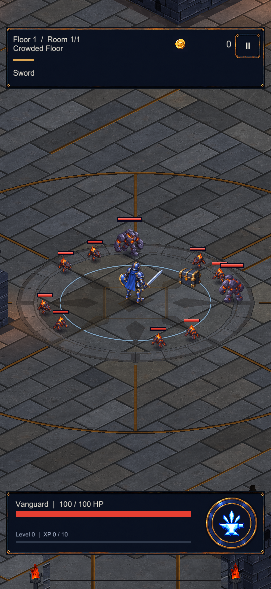
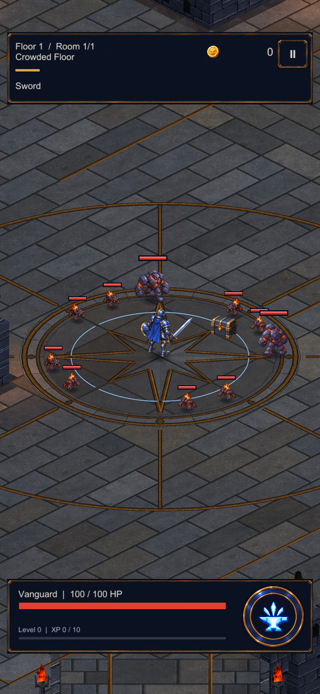
Bridge deck
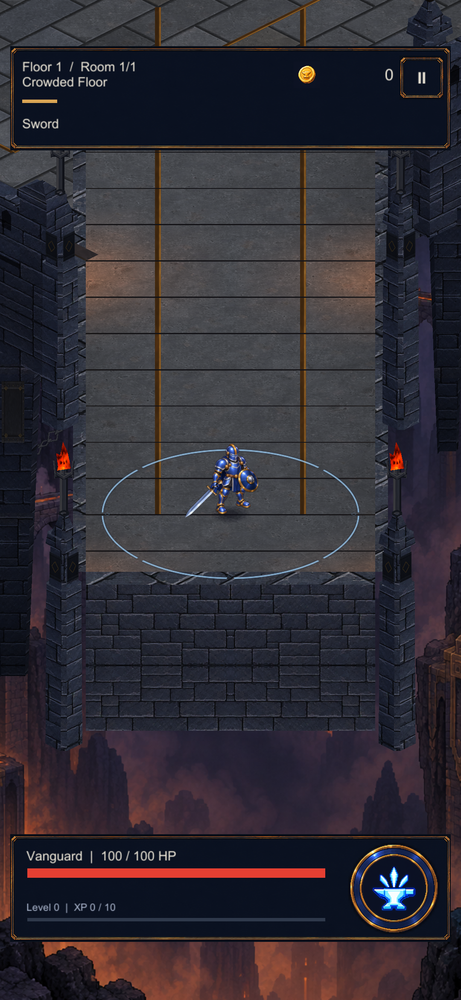
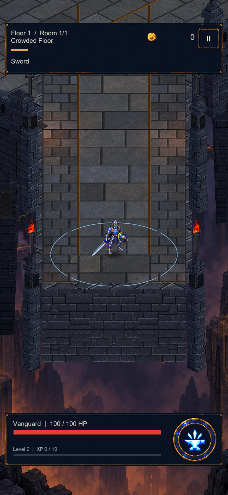
Bridge detail
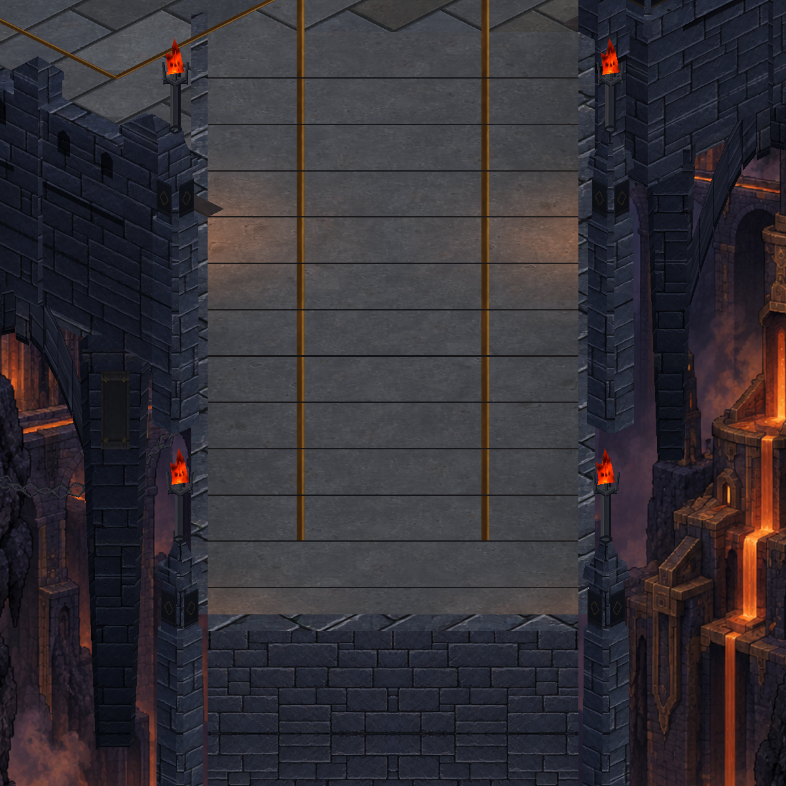
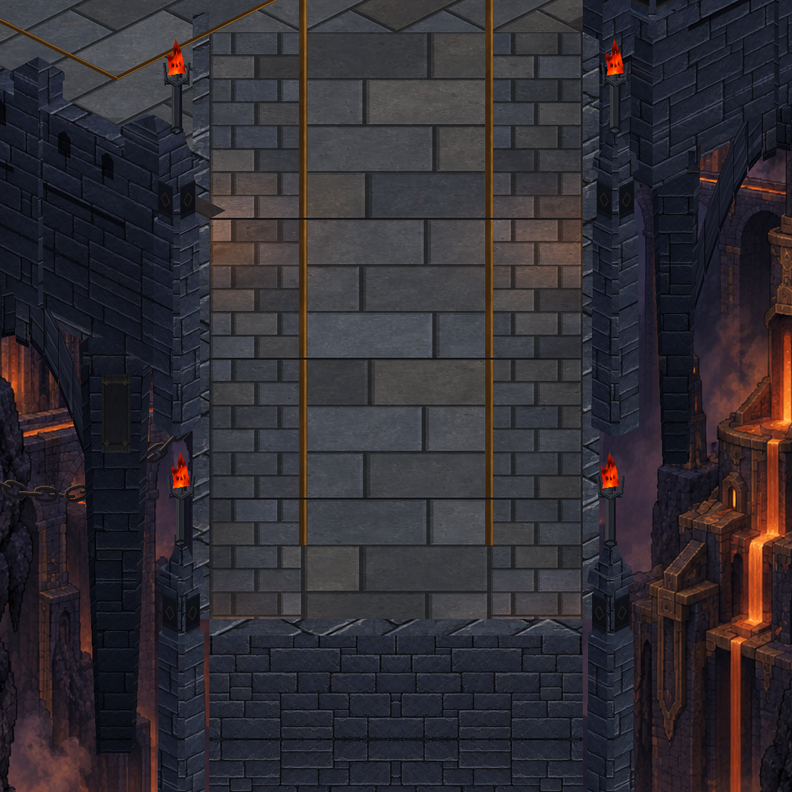
Chains
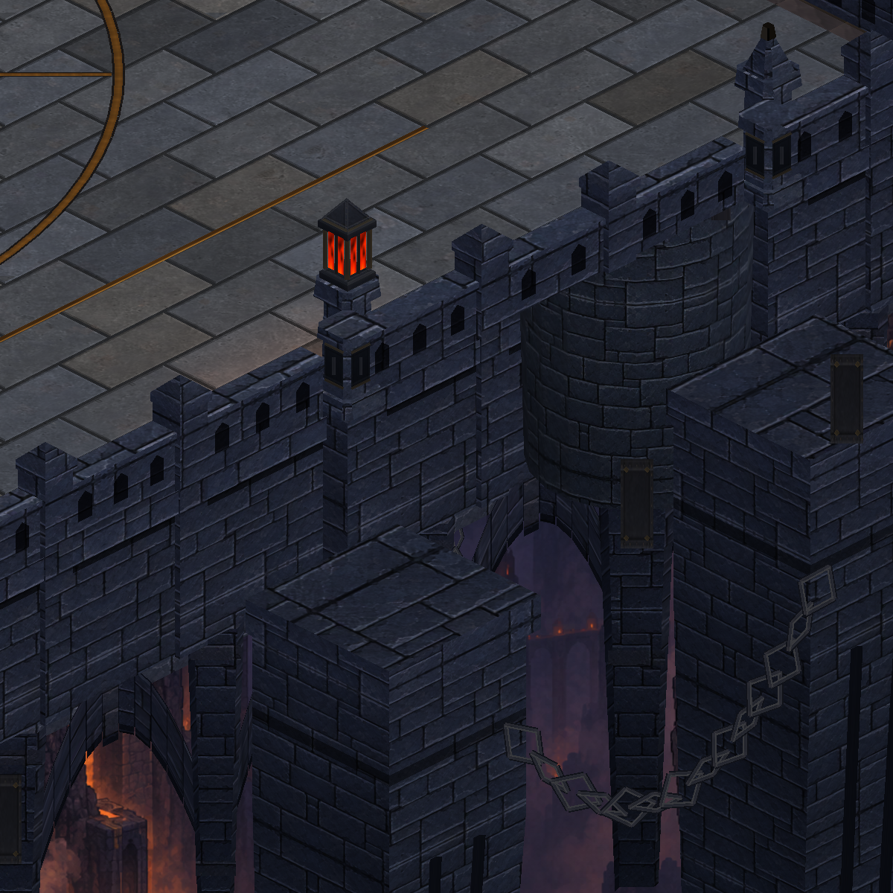
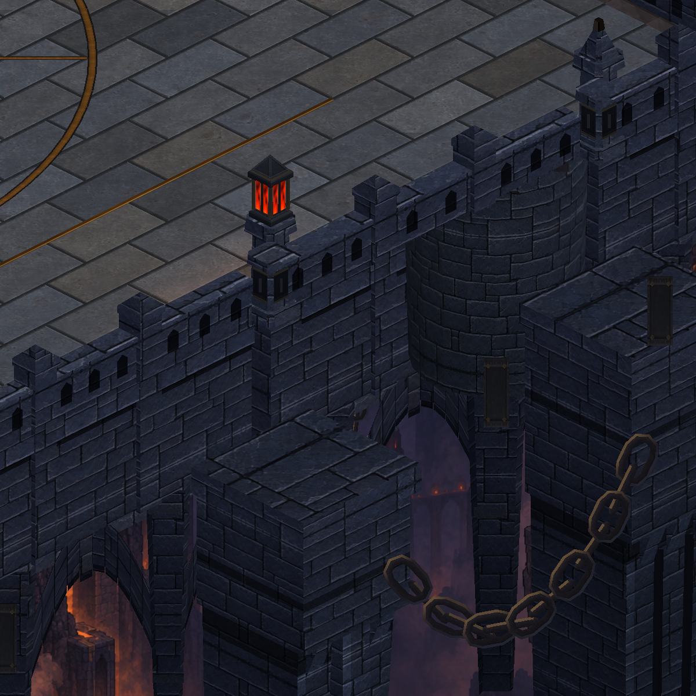
Reservoir and boiler
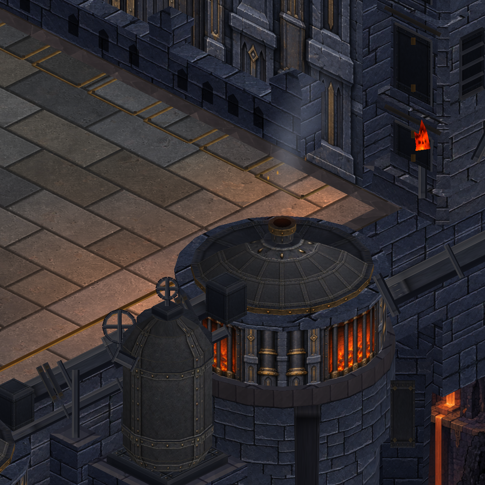
Pipe storage
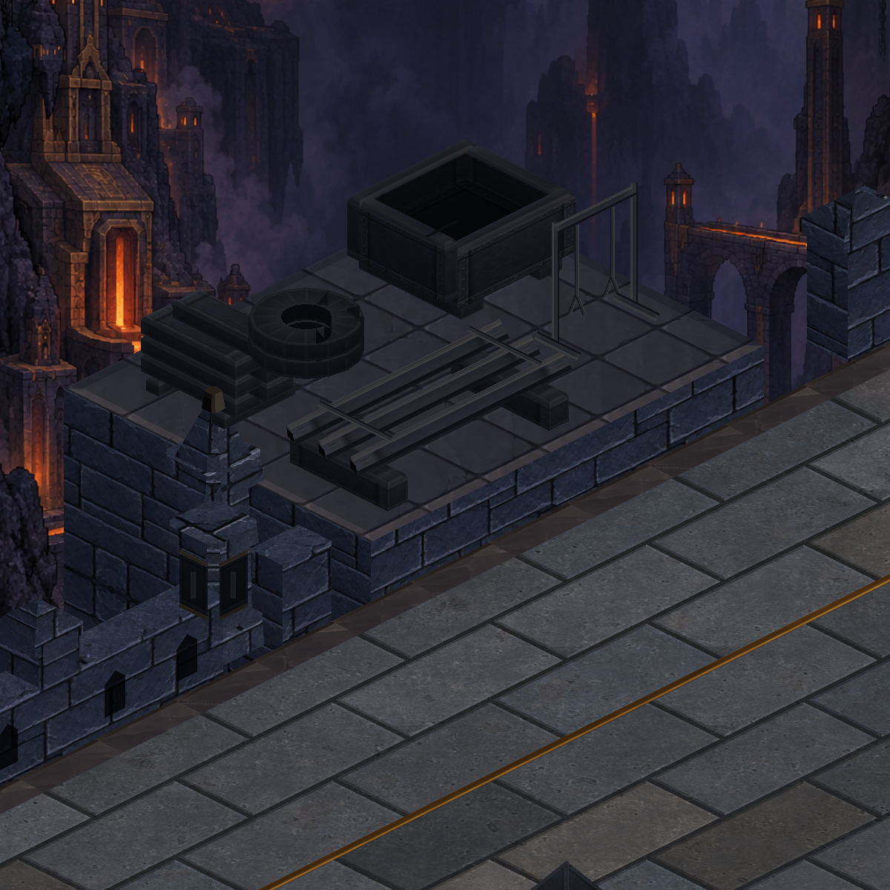

Gate (texture 2048)
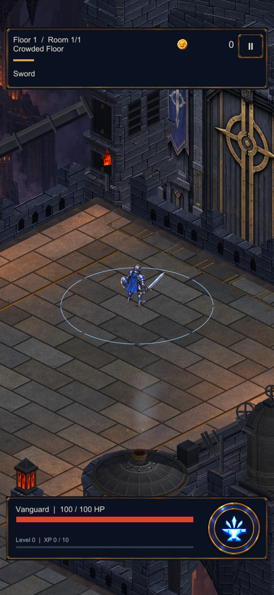
Whole map (piers, chains, bridge, seal)
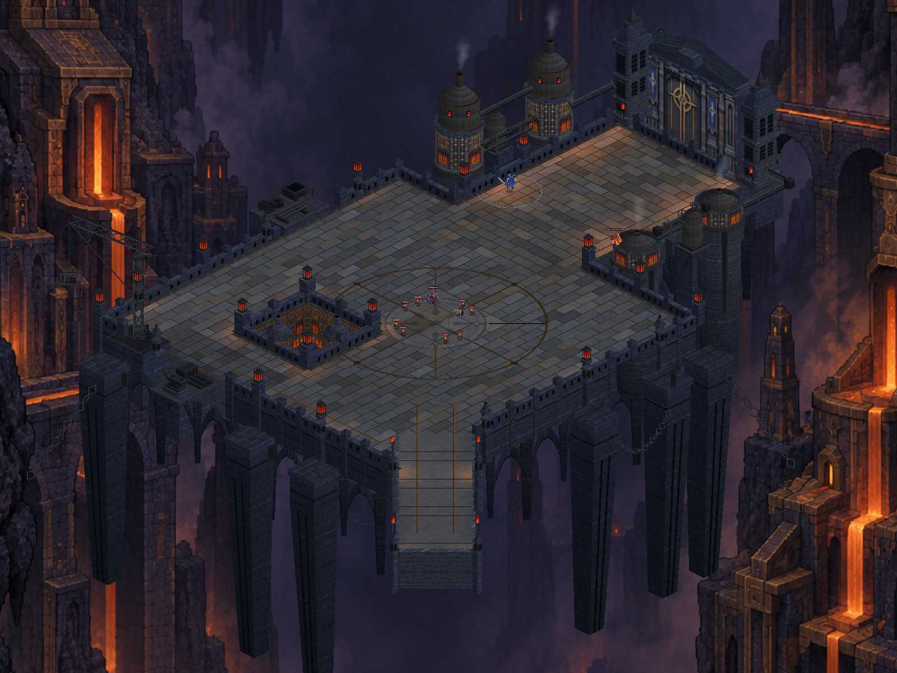
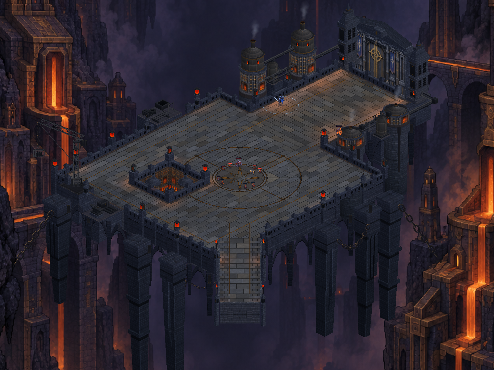